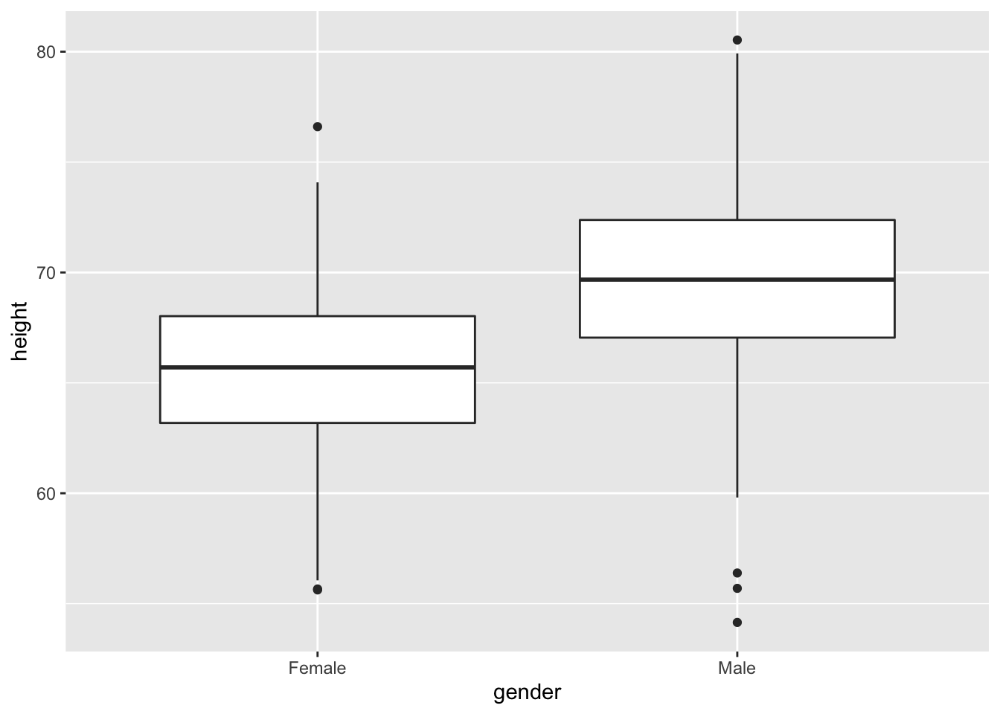
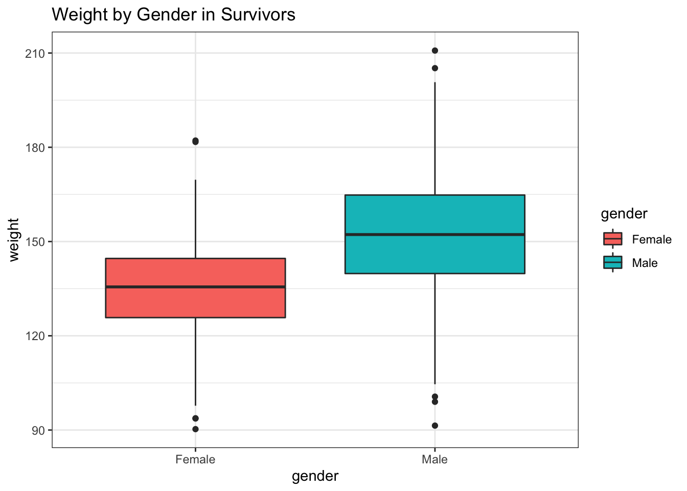
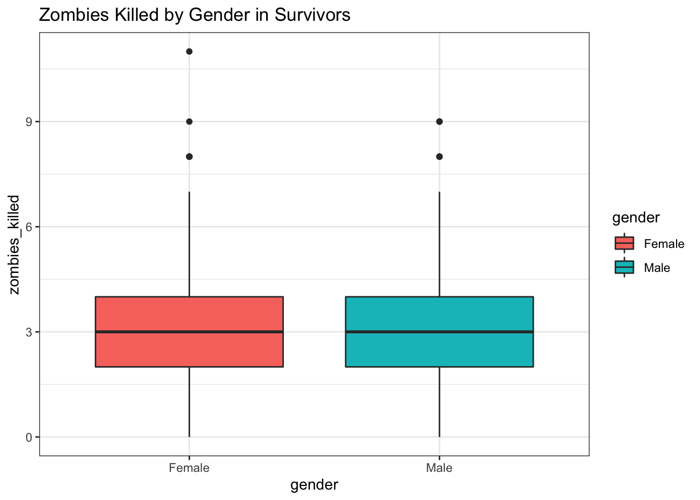
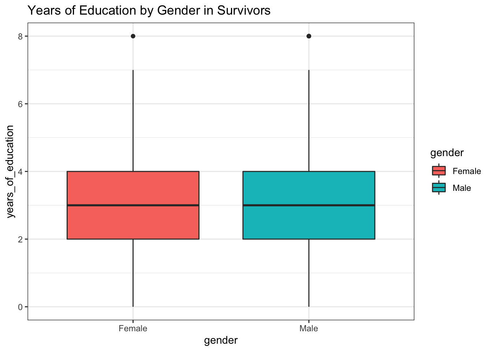
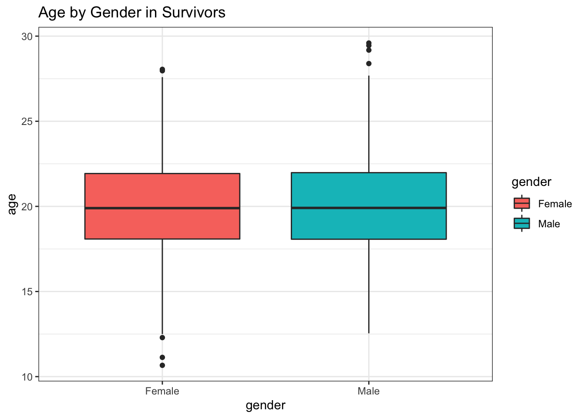
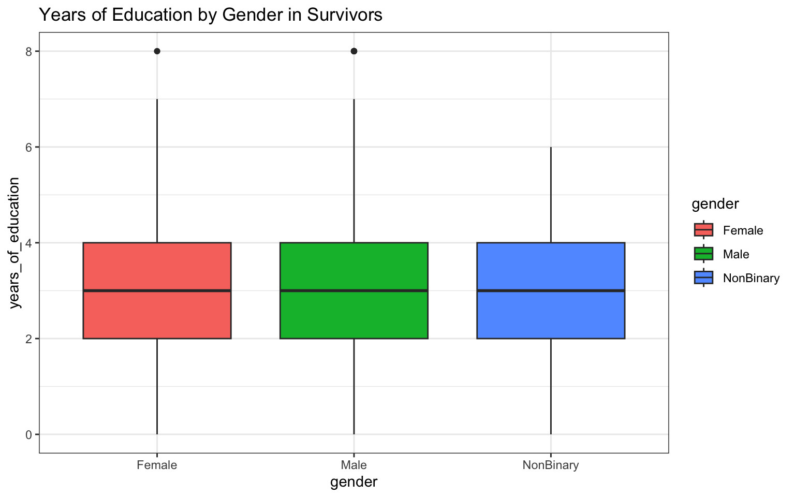

Homework 03 Solutions
Christopher A. Schmitt
10/6/2021
Homework Solutions!
Create a new GitHub repo and git-referenced Rstudio Project called “AN588_Zombies_BUlogin”. Within that repo, create a new .Rmd file called “BUlogin_OriginalHomeworkCode_03”. Modules 03-08 will each have concepts and example code that will help you complete this assignment. Don’t forget to add your Peer Group and instructor as collaborators, and to accept their invitations to you. Making sure to push both the markdown and knitted .html files to your repository, do the following:
Load in the dataset “zombies.csv” from my GitHub repo. This data includes the first name, last name, and gender of the entire population of 1000 people who have survived the zombie apocalypse and are now ekeing out an existence somewhere on the East Coast, along with several other variables (height, weight, age, number of years of education, number of zombies they have killed, and college major; see here for info on important post-zombie apocalypse majors).
-
Calculate the population mean and standard deviation for each quantitative random variable (height, weight, age, number of zombies killed, and years of education). NOTE: You will not want to use the built in
var()andsd()commands as these are for samples. - Use {ggplot} to make boxplots of each of these variables by gender.
- Use {ggplot} to make scatterplots of height and weight in relation to age. Do these variables seem to be related? In what way?
- Using histograms and Q-Q plots, check whether the quantitative variables seem to be drawn from a normal distribution. Which seem to be and which do not (hint: not all are drawn from the normal distribution)? For those that are not normal, can you determine from which common distribution they are drawn?
-
Now use the
sample()function to sample ONE subset of 30 zombie survivors (without replacement) from this population and calculate the mean and sample standard deviation for each variable. Also estimate the standard error for each variable, and construct the 95% confidence interval for each mean. Note that for the variables that are not drawn from the normal distribution, you may need to base your estimate of the CIs on slightly different code than for the normal… - Now draw 99 more random samples of 30 zombie apocalypse survivors, and calculate the mean for each variable for each of these samples. Together with the first sample you drew, you now have a set of 100 means for each variable (each based on 30 observations), which constitutes a sampling distribution for each variable. What are the means and standard deviations of this distribution of means for each variable? How do the standard deviations of means compare to the standard errors estimated in [5]? What do these sampling distributions look like (a graph might help here)? Are they normally distributed? What about for those variables that you concluded were not originally drawn from a normal distribution?
- Load in the dataset “zombies.csv” from my GitHub repo.
The first element of this assignment is loading in the dataset. As always in R, there are many many ways to do this, and we have examples for a few of them in previous modules (particularly Module 05). My preferred way, when I’ve got a clear online location for the dataset (in this case, the GitHub repo link provided above), is to use a {curl} command just because that’s usually the most efficient. As always, though, if you have another way to do it that’s great; the point is to get the data in, doesn’t necessarily matter how for a dataset this small:
> library(curl)## Using libcurl 7.54.0 with LibreSSL/2.6.5> f <- curl("https://raw.githubusercontent.com/fuzzyatelin/fuzzyatelin.github.io/master/AN588_Fall21/zombies.csv")
> z <- read.csv(f, header = TRUE, sep = ",", stringsAsFactors = FALSE)
> head(z)## id first_name last_name gender height weight zombies_killed
## 1 1 Sarah Little Female 62.88951 132.0872 2
## 2 2 Mark Duncan Male 67.80277 146.3753 5
## 3 3 Brandon Perez Male 72.12908 152.9370 1
## 4 4 Roger Coleman Male 66.78484 129.7418 5
## 5 5 Tammy Powell Female 64.71832 132.4265 4
## 6 6 Anthony Green Male 71.24326 152.5246 1
## years_of_education major age
## 1 1 medicine/nursing 17.64275
## 2 3 criminal justice administration 22.58951
## 3 1 education 21.91276
## 4 6 energy studies 18.19058
## 5 3 logistics 21.10399
## 6 4 energy studies 21.48355Great! Now we can get started characterizing this population of zombie apocalypse survivors, including taking the population mean and standard deviation for each quantitative random variable.
- Calculate the population mean and standard deviation for each quantitative random variable (height, weight, age, number of zombies killed, and years of education).
Remember, this is different from sample statistics, as outlined in Module 08, where you can find helpful code for calculating them. In that module, we learned that while the population variance is the sum of squares divided by N (our population size), the sample variance is the sum of squares divided by n-1 (our sample size minus one degree of freedom).
We can use the mean() function to calculate the mean of, for example, weight:
> mean(z$weight)## [1] 143.9075And let’s use the pop_sd function we created in Module 08 to get the population standard deviation (we also need the pop_v function to make it work properly):
> pop_v <- function(x) {
+ sum((x - mean(x))^2)/(length(x))
+ }
> pop_sd <- function(x) {
+ sqrt(pop_v(x))
+ }
> pop_sd(z$weight)## [1] 18.39186If you compare it to the sd() function, designed for samples, you’ll see it’s slightly different due to the accommodation for the degrees of freedom:
> sd(z$weight)## [1] 18.40106Now, you can just run each of these one by one, simply plugging in the different variables, but the {tidyverse} has given us some fancier (and faster) options. You can use the summarise() function (or verb as the {tidyverse} calls them) to run all of them in a single pipe:
> library(tidyverse)## ── Attaching packages ─────────────────────────────────────── tidyverse 1.3.1 ──## ✓ ggplot2 3.3.5 ✓ purrr 0.3.4
## ✓ tibble 3.1.3 ✓ dplyr 1.0.7
## ✓ tidyr 1.1.3 ✓ stringr 1.4.0
## ✓ readr 2.0.1 ✓ forcats 0.5.1## ── Conflicts ────────────────────────────────────────── tidyverse_conflicts() ──
## x dplyr::filter() masks stats::filter()
## x dplyr::lag() masks stats::lag()
## x readr::parse_date() masks curl::parse_date()> zparams <- z %>%
+ select(height, weight, age, zombies_killed, years_of_education) %>%
+ summarise(across(everything(), list(mean = mean, sd = pop_sd)))
> zparams## height_mean height_sd weight_mean weight_sd age_mean age_sd
## 1 67.6301 4.30797 143.9075 18.39186 20.04696 2.963583
## zombies_killed_mean zombies_killed_sd years_of_education_mean
## 1 2.992 1.747551 2.996
## years_of_education_sd
## 1 1.675704- Use {ggplot} to make boxplots of each of these variables by gender.
The easiest way to learn how to use {ggplot2} is to just dive in and start experimenting. You can get started by checking out the {tidyverse} webpage for {ggplot2}. There’s a really helpful cheat sheet there taht will walk you through basic {ggplot2} grammar.
To build a boxplot, we first need to use the ggplot function, which will set up our dataset, followed by a geom call that defines the kind of figure we want to make from that dataset. Here’s a first try making a boxplot if height by gender. It’s a very basic plot in which I’m calling in my dataset (data = z), defining my x- and y-axis variables (there are named in the aes() or aesthetics command within ggplot()), and then defining my figure output as a boxplot using the geom_boxplot() command. Notice that separate commands that modify the figure outside our ggplot() command are added using the + character:
> genplot <- ggplot(data = z, aes(x = gender, y = height)) + geom_boxplot()
> genplot
The really nice thing about {ggplot2} is the added capabilities to prettify your work. Here’s a small example… see if you can figure out which bit of code makes which change to the graphic:
> genplot <- ggplot(data = z, aes(x = gender, y = height, fill = gender)) + geom_boxplot() +
+ ggtitle("Height by Gender in Survivors") + theme_bw()
> genplot
You can easily run all of the required plots by copying and pasting each individual variable name into the chunk, like so:
> genplot <- ggplot(data = z, aes(x = gender, y = height, fill = gender)) + geom_boxplot() +
+ ggtitle("Height by Gender in Survivors") + theme_bw()
> genplot
> genplot <- ggplot(data = z, aes(x = gender, y = weight, fill = gender)) + geom_boxplot() +
+ ggtitle("Weight by Gender in Survivors") + theme_bw()
> genplot
> genplot <- ggplot(data = z, aes(x = gender, y = zombies_killed, fill = gender)) +
+ geom_boxplot() + ggtitle("Zombies Killed by Gender in Survivors") + theme_bw()
> genplot
> genplot <- ggplot(data = z, aes(x = gender, y = years_of_education, fill = gender)) +
+ geom_boxplot() + ggtitle("Years of Education by Gender in Survivors") +
+ theme_bw()
> genplot
> genplot <- ggplot(data = z, aes(x = gender, y = age, fill = gender)) + geom_boxplot() +
+ ggtitle("Age by Gender in Survivors") + theme_bw()
> genplot
Now, as with the previous example, there are ways to simplify our work so that we don’t have to write a separate line of code for each figure. Remembering the value of looping to save time, I leaned on the package {ggloop} to run all my plots at once. I would not expect you to be able to figure this out on your own, but I thought it might be nice to show you:
> library(ggloop)
> traits <- z %>%
+ select(gender, height, weight, zombies_killed, years_of_education, age)
> # here I've used piping to select the names of only those columns in 'z'
> # that have numeric entries (plus the 'gender' column)
>
> genplots <- ggloop(traits, aes_loop(x = gender, y = height:age))
> genplots[1:5] <- genplots[1:5] %L+% geom_boxplot(aes(fill = gender))
> genplots## $x.gender_y.height
##
## $x.gender_y.weight
##
## $x.gender_y.zombies_killed
##
## $x.gender_y.years_of_education
##
## $x.gender_y.age
- Use {ggplot} to make scatterplots of height and weight in relation to age. Do these variables seem to be related? In what way?